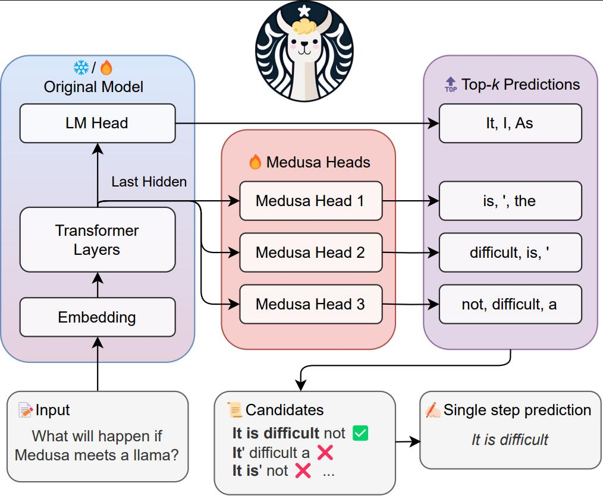
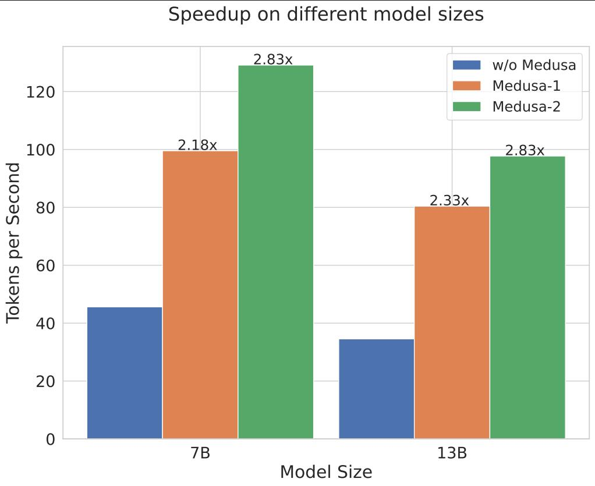
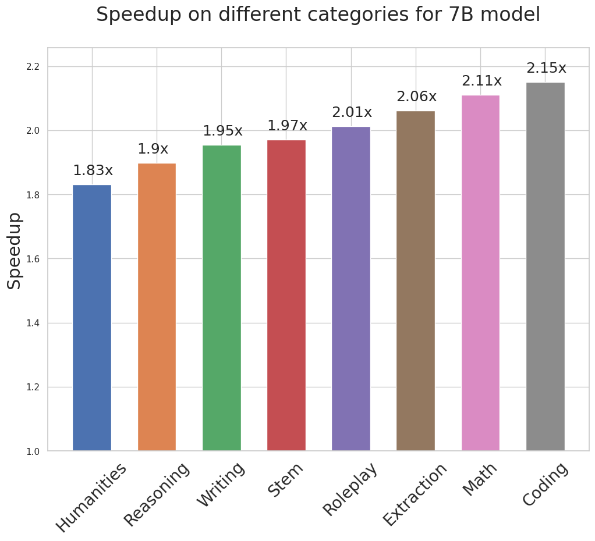

PDC project presentation
Medusa LLM Acceleration
A clearer project journey: why the 64-node Medusa base gave the strongest speedup, what we implemented in Triton/Turbo/QJL, and why TurboQuant plus Llama 3.2 head training did not land.
node Medusa base was the headline result, compared with the 24-node optimized tree path.
headline result
Maximum speedup came from the 64-node Medusa base path.
The 24-node optimized tree reduced verifier work, but it could lose too much speculative depth.
Candidate tree budget
- Speed was driven by accepted tokens per decode step.
- Smaller trees help only when acceptance stays high.
- Fallback verification erased many pruning gains.
project journey
From simple Medusa speedup to systems-level bottlenecks.
Baseline
Measured standard autoregressive TinyLlama generation.
Medusa
Added tree decoding with four speculative heads.
Triton
Fused expensive selection and verifier routines.
Turbo
Tried smaller and adaptive trees with fallback.
QJL + VQ
Compressed and sketched cache state for pruning.
Training
Self-distilled heads and tested Llama 3.2 transfer.
The final story is not just "make the tree smaller". The real objective is: keep acceptance deep, keep verification exact, and keep KV cache movement cheap.
core idea
Medusa predicts several future tokens, then the base model verifies them.
The base model remains the source of truth. Medusa wins only when it lets one verifier step accept multiple tokens.

benchmark design
We measured speed, quality, and cache cost together.
| Path | What it checked |
|---|---|
| Baseline | Plain Hugging Face autoregressive generation. |
| Medusa base | Tree decoding with the full candidate set. |
| Turbo modes | 24-node, adaptive, fused, QJL, packed KV-QJL, and VQ variants. |
Metrics that mattered
tokens per second
accepted tokens per step
verified nodes per step
prefix match
Relevant files: bench_base.py, bench_medusa.py, run_batch_benchmark.py, bench_comm_turbo.py.
results
The Medusa path confirmed the speedup mechanism.
Existing project assets summarize the expected Medusa speedup behavior across model sizes and categories.


implementation map
The codebase split into model control, decode utilities, and cache kernels.
Model path
medusa_model.py
- Loads Medusa heads.
- Runs the generation loop.
- Collects Turbo stats.
Decode path
utils.py
- Builds tree buffers.
- Evaluates acceptance.
- Plans pruning.
Cache path
kv_cache.py + triton_kernels.py
- Maintains KV state.
- Compresses VQ cache.
- Accelerates QJL scoring.
triton implementation
Triton removed avoidable verifier and planning overhead.
- Greedy verification only needs argmax, not full logits.
- QJL scoring uses packed XNOR-popcount kernels.
- Pruned layouts are cached so masks are not rebuilt every step.
- Triton improved the fast path, but acceptance quality still dominated.
turbo optimization
Turbo tried to prune the tree only when the verifier could still accept deeply.
Use compact tree
24-node or pruned path reduces verifier nodes.
Use full tree
Full verification protects acceptance and prefix match.
Fallback
Rewind cache length and verify the full tree again.
QJL
QJL gave a cheap ranking signal, not a replacement for exact verification.
Packed 1-bit QJL sketch
candidate nodes
packed dimensions
smaller than FP16 keys at dim 128
- Useful before verification.
- Unsafe as the final decision.
- Best when it preserves high-probability deep paths.
TurboQuant and KV cache
KV compression saved memory in theory, but verification needed accurate cache state.
- Rotated scalar quantization stores compact keys and values.
- Residual signs try to recover lost inner-product structure.
- Hybrid mode keeps recent tokens exact in a hot window.
- The verifier still often pays for dequantization, copies, and rewinds.
why it failed
The failure was caused by KV-cache overhead plus lower acceptance.
Root cause
Medusa speedup depends on exact verifier acceptance. Once the cache path had to compress, sketch, copy, rewind, or dequantize, the overhead could be larger than the work saved by pruning.
Practical lesson
The 64-node base path stayed strong because it preserved candidate depth and avoided many recovery paths. The optimized path needed both lower node cost and equal acceptance.
head training
Head quality became the final bottleneck.
- TinyLlama training froze the base model and trained only Medusa heads.
- The target was self-distilled greedy future tokens from the base model.
- Llama 3.2 did not train heads well enough for deep acceptance.
- Weak heads increased decode steps, which amplified KV-cache overhead.
Relevant files: train_tinyllama_medusa_heads.py and kaggle_mix_and_train_medusa.py.
practical upgrade
The next speed lever is better accepted depth, then calibrated cost control.
Hydra scaffold
Later draft heads can condition on earlier speculative token embeddings, targeting the weak-head bottleneck without changing verifier correctness.
Calibrated tree
A sweep records which choice budget gives the best exact-safe tokens per second on the current GPU and prompt mix.
Exact boundary
Every fast path still uses the base verifier for final acceptance; approximate signals only choose what to verify.
- draft_head_type="hydra" is available as training/inference scaffolding.
- tree_policy="adaptive_calibrated" falls back when calibration is missing or confidence is low.
- calibrate_tree_policy.py writes the accepted-token and verified-node data used by the policy.
final takeaways
Medusa acceleration is a contract between heads, verifier, and KV cache.
node Medusa base gave the strongest project headline.
kernels reduced verifier and planning overhead.
cache movement and reconstruction erased many quantization gains.
- Optimize accepted tokens per step, not just node count.
- Use approximate QJL only for pruning, never for final acceptance.
- Hydra-style heads and calibrated tree policies are the practical next step after the current exact verifier path.
file appendix
Files to open during questions.
bench_base.pyBaseline generation.
bench_medusa.pyMedusa benchmark.
bench_comm_turbo.pyTurbo and QJL sweeps.
calibrate_tree_policy.pyTree calibration.
bench_qjl_popcount.pyQJL microbenchmark.
medusa/model/medusa_model.pyGeneration loop.
medusa/model/utils.pyDecode utilities.
medusa/model/kv_cache.pyKV cache modes.
medusa/model/triton_kernels.pyTriton kernels.
train_tinyllama_medusa_heads.pyHead trainer.
kaggle_mix_and_train_medusa.pyTraining data mix.
run_batch_benchmark.py10-prompt suite.
TinyLlama.../config.jsonLocal head config.